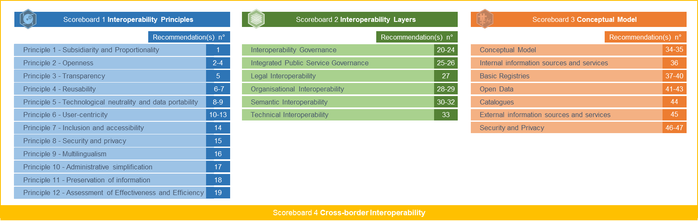

Ireland
Digital Public Administration factsheet 2023
Digital Public Administration Factsheet 2023
Table of Contents
1 Interoperability State-of-Play 4
2 Digital Public Administration Political Communications 8
3 Digital Public Administration Legislation 17
4 Digital Public Administration Infrastructure 23
5 Digital Public Administration Governance 31
6 Cross border Digital Public Administration Services for Citizens and Businesses 35
1
Interoperability State-of-Play
Interoperability State-of-Play
In 2017, the European Commission published the European Interoperability Framework (EIF) to give specific guidance on how to set up interoperable digital public services through a set of 47 recommendations divided in three pillars. The EIF Monitoring Mechanism (MM) was built on these pillars to evaluate the level of implementation of the framework within the Member States. Whereas during the previous, the MM relied upon three scoreboards, the 2022 edition includes an additional scoreboard on cross-border interoperability, assessing the level of implementation of 35 Recommendations. The mechanism is based on a set of 91 Key Performance Indicators (KPIs) clustered within the four scoreboards (Principles, Layers, Conceptual model and Cross-border interoperability), outlined below.

Source: European Interoperability Framework Monitoring Mechanism 2022
Each scoreboard breaks down the results into thematic areas (i.e. principles). The thematic areas are evaluated on a scale from one to four, where one means a lower level of implementation and four means a higher level of implementation. The graphs below show the result of the EIF MM data collection exercise for Ireland in 2022, comparing it with the EU average as well as the performance of the country in 2021.
Source: European Interoperability Framework Monitoring Mechanism 2022
Ireland’s results in Scoreboard 1 show an overall good implementation of the EIF Principles, scoring above the European average for Principles 1 (Subsidiarity and Proportionality), 3 (Trasparency), and 9 (Multilingualism). Areas of improvements are concentrated in the Principles 4 (Reusability) and 12 (Assessment of Effectiveness and Efficiency) whose results show an upper-medium performance in the implementation of corresponding recommendations. For instance, by working on Recommendation 6, which concerns the reuse, share, and cooperation in the development of joint solutions when implementing European public services, the overall score for Principle 4 would be improved.
Source: European Interoperability Framework Monitoring Mechanism 2022
The Irish results for the implementation of the interoperability layers assessed for Scoreboard 2 show an excellent performance, with a score of 4 in all layers. In order to further improve its performance, the country should focus on actively participating in standardisation work relevant to its needs to ensure its requirements are met (Interoperability governance – Recommendation 24).
Source: European Interoperability Framework Monitoring Mechanism 2022
Ireland’s scores assessing the Conceptual Model in Scoreboard 3 show an overall good performance, achieving a higher score than the EU average concerning External information sources and services. However, some areas of improvement have also been identified. Particularly, recommendations related to the Conceptual model could be improved by deciding on a common scheme for interconnecting loosely coupled service components and putting in place and maintaining the necessary infrastructure for establishing and maintaining European public services (Conceptual Model – Recommendation 35). In addition, Ireland should use trust services according to the Regulation on eID and Trust Services as mechanisms that ensure secure and protected data exchange in public services (Security and Privacy – Recommendation 47) in order to achieve an higher score in this component.
Source: European Interoperability Framework Monitoring Mechanism 2022
The available results of Ireland concerning Cross-border interoperability in Scoreboard 4 show a high performance of the country in 16 indicatros. Particularly, even though the lack of data for some indicators does not allow for a complete analysis, Ireland has a high performance above the EU average for most indicators. However, the country still has margin for improvement in relation to Principle 7 (Inclusion and Accessibility) and Security and Privacy. More specifically, Ireland should further ensure that all public services are accessible to all citizens, including persons with disabilities, the elderly and other disadvantaged groups. For digital public services, public administrations should comply with e-accessibility specifications that are widely recognised at European or international level (Recommandation 14).
Additional information on Ireland’s results on the EIF Monitoring Mechanism is available online through interactive dashboards.
Curious about the state-of-play on digital public administrations in this country? Please find here some relevant indicators and resources on this topic: |

2
Digital Public Administration Political Communications
Digital Public Administration Political Communications
Specific Political Communications on Digital Public Administration
Harnessing Digital – The Digital Ireland Framework
Following the announcement by the Minister of the Environment, Climate and Communications of the development of a new National Digital Strategy in June 2020 and a public consultation at the end of 2018, the government launched the new national digital strategy, Harnessing Digital – The Digital Ireland Framework in February 2022, to drive and enable the digital transition across the Irish economy and society.
This high-level framework sets out a pathway to support Ireland’s ambition to be a digital leader at the heart of European and global digital developments; and places a strong emphasis on inclusiveness, security and safety, underpinned by strong governance and a well-resourced regulatory framework. It will help us fully realise many of the benefits of digital including: more flexible and remote working and new job opportunities; new markets and customers for businesses; more efficient and accessible public services for all; and empowerment and choice in how we learn or participate in social activities.
The government will ensure these benefits are achieved by:
- Making connectivity available to everyone, including through the National Broadband Plan, Remote Working Hubs and Broadband Connection Points, with a target of having all Irish households and businesses covered by Gigabit network no later than 2028 and all populated areas covered by 5G no later than 2030;
- Providing digital skills for all – from school, to further and higher education, to life-long learning, with a target of increasing the share of adults with at least basic digital skills to 80% by 2030;
- Ensuring widespread access and use of inclusive digital public services, with a target of 90% of services to be consumed online by 2030;
- Helping small businesses benefit from digital opportunities by providing grants and assistance, with a target of 90% of SMEs at basic digital intensity by 2030 and 75% enterprise take-up in cloud, AI and big data;
- Investing in cyber-security to protect Irish citizens and businesses, including increased resources for the National Cyber Security Centre;
- Ensuring a modern and well-resourced regulatory framework; and
- Playing a leading role in Europe right across the digital agenda.
This digital strategy aligns with both EU priorities, under the Digital Decade, and national priorities, under the 2021 Economic Recovery Plan and Ireland’s National Recovery and Resilience Plan. It also complements our work towards achieving Ireland’s climate targets, with our green and digital ambitions re-enforcing each other.
In 2022, a progress report on Harnessing Digital – The Digital Ireland Framework was released.
Connecting Government 2030: A Digital and ICT Strategy for Ireland’s Public Service
Connecting Government 2030 was published in March 2022 and sets out an approach to deliver digital government for all, benefitting both society and the broader economy. The Public Service in Ireland must harness digitalisation to drive a step-change in how people, businesses, and policy makers interact, ensuring interoperability across all levels of government and across public services. We must ensure that in digitalising our public services we take a “user first” and “business first” approach. The strategy provides a framework within which all public service organisations can deliver their own digital commitments focussed on the targets set out in the Digitalisation of Public Services dimension of the national digital strategy, Harnessing Digital – The Digital Ireland Framework. It also aligns with the targets set out in Civil Service Renewal 2030 as well as addressing digital targets set by the EU. The strategy will carry forward the GovTech 2019 Priority Action Plan and incorporates specific actions from the Programme for Government. Connecting Government 2030 specifically replaces the previous Public Service ICT Strategy and eGovernment Strategy 2017–2020 . It will also act as an umbrella strategy for actions across a number of other related government policies and strategies, thereby ensuring an overall coordinated and integrated approach to their delivery.
The strategy outlines six priority action areas to help deliver on the ambitions of Connecting Government 2030:
- A Human-Driven Digital Experience;
- Harnessing Data Effectively;
- Government as a Platform;
- Evolving Through Innovation;
- Strengthening Digital Skills; and
- Focusing on Governance and Leadership.
These actions are supported by four underpinning design principles:
- Digital by Default and Cloud first;
- All-of-Government Approach;
- New Ways of Working; and
- Privacy-Driven and Secure by Design.
Berlin Declaration on Digital Society and the Value-Based Digital Government
In December 2020, the Irish government signed the Berlin Declaration on Digital Society and Value-Based Digital Government, thus re-affirming its commitment – together with other EU Member States – to foster digital transformation in order to allow citizens and businesses to harness the benefits and opportunities offered by modern digital technologies. The Declaration aims to contribute to a value-based digital transformation by addressing and strengthening digital participation and digital inclusion in European societies. The ambitions of the Berlin Declaration are reflected in the national digital strategy, Harnessing Digital – The Digital Ireland Framework, and Connecting Government 2030: A Digital and ICT Strategy for Ireland’s Public Service.
Civil Service Renewal 2030
Civil Service Renewal 2030 is an ambitious 10-year strategy of reform for the Civil Service, published in May 2021. The Strategy will be implemented through a series of 3-year action plans. These action plans will detail the precise goals and initiatives which will progress each of our strategic priorities. Our progress on the commitments within these action plans will be continuously measured, evaluated, and reported on.
The first of these action plans, Civil Service Renewal 2024 (CSR2024), has already been published and will deliver on specific actions over the next three years.
Civil Service Renewal 2030 has been collaboratively developed, and it will be collaboratively delivered. A shared responsibility of all civil servants to own the commitments within this Strategy will make our Civil Service Renewal 2030 vision a reality.
Interoperability
Public Service Data Strategy
The Public Service Data Strategy for the period 2019–2023 was published in December 2018, providing a detailed vision with a set of goals and actions to deliver a more joined-up whole-of-government approach to how data is used and managed within the public service. The strategy aimed to put in place a series of measures to improve how data is governed, managed and re-used in a secure, efficient and transparent manner, for the benefit of citizens, businesses and policy makers.
Its implementation will put government in a better place to respond to service demands in an agile manner by:
- Providing more joined-up and integrated, end-to-end digital services;
- Ensuring better processes for policy formulation and evaluation;
- Improving protection and transparency of personal data processing; and
- Reducing administration by cutting the need for businesses and citizens to provide the same data over and over again.
Key Enablers
Open Data, Reusability and Access to Public Information
Open Data Strategy
A Open Data Strategy for the period 2017–2022 was published in July 2017. This strategy built on achievements made since the launch of the Open Data Initiative in 2014. Its two core objectives are: first, the publication of high-value government data in open format, making it publicly available and freely reusable; and second, engaging with a broad community of stakeholders to promote its social and economic benefits. The strategy sets out seven strategic themes which will guide the Open Data Initiative over the lifetime of the strategy:
- Broaden the range of public bodies actively engaged in the Open Data Initiative – the ‘Open Data Providers’;
- Broaden the scope and improve the quality, quantity and range of open data and associated metadata (to be used internally and made available to the public), and improve the quality and range of services provided through the national Open Data Portal;
- Continue to engage with all stakeholders and encourage the use of open data;
- Support and encourage various groups of open data users;
- Provide a framework to support and train all data providers and build capacity in the management and use of open data;
- Evaluate the impact, benefits and risks of the Open Data Initiative and benchmark against other jurisdictions; and
- Ensure that effective governance structures are in place to implement the strategy.
Ireland’s Open Data Portal, operated by the Government Reform Unit, now provides access for reuse and redistribution to over 13 000 datasets held by public bodies. Ireland continues to be ranked amongst the Open Data 'trend-setters' in the European Commission’s Open Data Maturity Assessment published in December 2022.
The Department of Public Expenditure, NDP Delivery and Reform issued Circular 20/2021, which sets out public service organisations’ obligations to comply with the Open Data Directive.
eID and Trust Services
eID in Ireland
Both the Harnessing Digital – The Digital Ireland Framework and the Connecting Government 2030: A Digital and ICT Strategy for Ireland’s Public Service highlight Ireland has the fastest growing take-up of eIDs in the world for government services.
The numbers of verified MyGovID using eID have grown from 900 000 in 2021 to 1.8 million in 2022.
Security Aspects
National Cybersecurity Strategy
The National Cybersecurity Strategy, published in December 2019, sets out a series of systematic measures designed to protect the nation against cybersecurity threats, develop the cybersecurity sector, and deepen international engagement on the future of the internet. The strategy was informed by the operational experience acquired by the National Cyber Security Centre (NSCS) between 2015 and 2019.
The key objectives of the strategy are:
- To ensure the State can respond to and manage cybersecurity incidents, including those with a national security component;
- To protect critical national infrastructure from cyberattacks and manage any disruption to services as a result of such attacks;
- To develop the cybersecurity sector in Ireland: more than 6 000 people are employed in the cybersecurity sector in Ireland and the country is well placed to expand this further;
- To work internationally to ensure Ireland has access to the best technology and measures available; and
- To increase skills and awareness among enterprise and private individuals around cybersecurity.
In July 2021 the Government agreed to expand the NCSC from 25 to 45 staff over the next 18 months and to 70 within five years. The associated budgetary increase for the NCSC for 2023 is estimated at EUR 5.4 million.
The NCSC, in conjunction with the Office of the Government Chief Information Officer (OGCIO), have now developed the criteria which are intended to create an acceptable security standard and form a broad framework for a set of measures which can be revised over time.
This model follows a holistic and comprehensive approach to the issues related to cybersecurity, which combines the best of various existing standards to address the needs of key stakeholders.
The strategy was followed by the publication of the Public Sector Cyber Security Baseline Standards in November 2021. These standards have been developed by the NCSC and the OGCIO to provide a holistic and comprehensive approach to Government ICT cyber security, including cloud services.
Interconnection of Base Registries
Public Service Data Strategy
The Public Service Data Strategy 2019–2023 acknowledges the principles and benefits derived from establishing base registries. In particular, it contains a specific action to “develop base registries and the processes required to govern their operation”. The Data Sharing and Governance Act 2019 includes powers to establish base registries.
eProcurement
National Public Procurement Policy Framework
In 2019, the National Public Procurement Policy Framework (NPPPF) set out the overarching policy framework for public procurement in Ireland, consisting of five thematic strands:
- Legislation (directives, regulations);
- Government policy (circulars, etc.);
- Capital works management framework for public works;
- General procurement guidelines for goods and services; and
- More detailed technical guidelines, template documentation and information notes as issued periodically by the Policy Unit of the Office of Government Procurement (OGP).
The framework sets out the procurement procedures to be followed by government Departments and State bodies under national and EU rules. The framework supports contracting authorities, including the OGP, the four key sectors (health, education, local government and defence), individual Departments, offices, commercial and non-commercial State bodies, and private entities which are subsidised for 50% or more by a public body, when awarding contracts for works, goods and services. It supports and enables public bodies to adopt procedures to meet their public procurement requirements and facilitates compliance with EU and national procurement rules.
 Strategy for Digital Transformation
Strategy for Digital Transformation
The OGP commenced as part of the European Commission’s Technical Support Instrument (TSI) 2022 programme. The project aims to provide the OGP with guidance and recommendations on the development of a strategy and a roadmap for the digital transformation of public procurement. The Commission appointed the OECD to lead the delivery of this support project and the OGP are providing direction and coordination assistance at a local level in Ireland.
The intention is for the OECD to conduct consultations with key stakeholders to understand the current digital public procurement landscape in Ireland and the factors that might influence and shape a strategy for the digital transformation of public procurement. The consultations will help the OECD develop an informed overview of the current state of play of digital public procurement in Ireland, as well strategic areas of interest, opportunities, challenges and risks for the development and implementation of a digitalisation strategy.
Domain-specific Political Communications
eHealth Strategy
The purpose of the eHealth Strategy is to provide an outline of eHealth and demonstrate how the individual citizen, the Irish healthcare delivery systems – both public and private – and the economy as a whole will benefit from eHealth. Priority areas for initial development include ePrescribing, online referrals and scheduling, Telehealth (particularly relating to the management of chronic disease) and the development of summary patient records.
Knowledge and Information Strategy
In May 2015, the Office of the Chief Information Officer at the Health Service Executive (HSE) published the Knowledge and Information Strategy delivering the benefits of eHealth in Ireland. The Strategy aims to deliver truly patient-centred, safe and excellent integrated care. The Strategy builds upon the eHealth Vision for Ireland and outlines how integrated information and enabling technology will support the delivery of innovative, safe and high-quality patient care to meet the needs of the population across all patient pathways and care settings. This strategy also outlines how to transform the organisation, from a knowledge and information perspective, to meet the delivery challenge ahead and to support the vision and values outlined in the HSE Corporate Plan. The Department of Health is currently in the process of refreshing the eHealth strategy and in the associated knowledge and information plan. The Department will deliver a Digital Health Framework this year and the HSE will develop a corresponding Strategic Implementation Plan.
 Technology Skills 2022: Ireland’s Third ICT Skills Action Plan
Technology Skills 2022: Ireland’s Third ICT Skills Action Plan
Ireland’s Third ICT Skills Action Plan 2022 is a plan to meet the country’s high-level ICT skills needs. This action plan sets out to achieve a step-change in Ireland’s supply performance, through a focussed set of impactful actions that will underpin the State’s continuing status as a global centre for high-level ICT talent. This ambition is being realised through a concerted partnership approach between government, industry, and the education and training sector.
Research Priority Areas
In March 2018, the government announced the revised Research Priority Areas 2018–2023, aligning the majority of competitively awarded public investment in research with 14 priority areas. Innovation 2020, Ireland’s strategy for research and development, science and technology, commits to reviewing the priority areas to ensure that they are still valid and to refreshing and revising them, if necessary, in the light of changed circumstances. The objective is to ensure that Ireland is favourably positioned to benefit from global opportunities now and into the future, by responding to worldwide megatrends and challenges that are shaping the global economy and Ireland’s place in it. Both the themes and the priority areas have been revised and updated repeatedly to reflect changing circumstances since 2012.
Innovative Technologies
Artificial Intelligence (AI)
National Artificial Intelligence Strategy for Ireland
In July 2021, the Department of Enterprise, Trade and Employment published the AI – Here for Good: National Artificial Intelligence Strategy for Ireland. This strategy aims to provide a high-level direction to the development, adoption, and implementation of AI in Ireland. The main objectives of the strategy are:
- To build strong public trust in AI as a force for societal good in Ireland;
- To generate an agile and appropriate governance and regulatory environment for AI;
- To increase productivity through a step change in AI adoption by Irish enterprises;
- To foster better public service outcomes through a step change in AI adoption by the Irish public sector;
- To promote a strong Irish ecosystem for high-quality and responsible AI research and innovation;
- To guarantee data, digital and connectivity infrastructure which provides a secure foundation for AI development and use in Ireland; and
- To prepare the workforce for adopting AI.
Declarations on Artificial Intelligence, Blockchain and Innovation Radar
In April 2018, the Minister for Trade, Employment, Business, EU Digital Single Market and Data Protection signed the EU Declarations on Artificial Intelligence, Blockchain and Innovation Radar. The aim was to harness opportunities for Ireland in the technology sector. These declarations defined areas where agreement had been reached by Member States for future cooperation.
Distributed Ledger Technologies
Cryptoassets and Blockchain Technology
In April 2018, Ireland was one of the 21 EU Member States which signed the declaration creating the European Blockchain Partnership with the goal of cooperating in the establishment of a European Blockchain Services Infrastructure (EBSI). Over the course of 2019, Ireland was an active participant in the work of the partnership, through its policy, technical, and use case groups, with ongoing engagement in particular with the Self-Sovereign Identity use case working group.
Internationally, Ireland is a member of EU and global initiatives, including the International Association for Trusted Blockchain Applications (INABTA) and the OECD. Through INABTA, Ireland will participate in the Government Advisory Board, engaging with the blockchain sector via a global discussion. At a national level, Ireland is engaging with the blockchain industry and academia through the public-private partnership called Blockchain Ireland.
Over 2019, work continued on the implementation of the Ireland for Finance Strategy (IFS) 2025, which aims to foster opportunities in international financial services by facilitating the use of new technologies such as blockchain through the following actions:
- Developing a Distributed Ledger Technology (DLT) platform for aircraft leasing;
- Integrating new technology and innovation approaches across Ireland’s IFS ecosystem, such as the usage of DLT and blockchain; and
- Developing and delivering an MSc in Applied Blockchain (Distributed Ledger Technologies).
In March 2018, the then Ministers for Finance and for Public Expenditure, NDP Delivery and Reform announced the creation of an internal working group (the Intra-Departmental Working Group) to monitor further developments in the areas of virtual currencies and blockchain technology. The aims of the Intra-Departmental Working Group are the following:
- Monitoring developments at a global (e.g. Financial Stability Board, Financial Action Task Force and International Monetary Fund) and European level (e.g. European Commission, European Parliament and European Central Bank) in relation to virtual currencies and blockchain, and providing input into the discussions as and when required;
- Building knowledge on developments in technology with an aim to identify risks and assess potential economic opportunities for Ireland;
- Engaging with subject matter experts across industry, academia and the private sector to help build a dynamic communication flow;
- Liaising with other areas of government to assess where involvement might be required;
- Considering whether suitable policy recommendations are required;
- Assisting in promoting a better understanding of the technology across government; and
- Aligning Ireland’s IFS2020 Strategy to foster opportunities in international financial services by building on the country’s strengths.
Big Data
No political communication was adopted in this field to date.
Cloud Computing
Cloud Computing Advice Note
The Cloud Computing Advice Note was published in October 2019. It recognised that the world of cloud computing, as well as the policy and legislative environments, have developed rapidly, and that the industry has matured in terms of the viability and benefits of cloud adoption. This guidance note provides a proactive and progressive approach to embracing cloud computing.
Internet of Things (IoT)
No political communication was adopted in this field to date.
High-performance Computing
Irish Centre for High-End Computing
The Irish Centre for High-End Computing (ICHEC) is delighted to announce that it has been successful in a competitive European-wide bid for a mid-range supercomputer following a call launched in December 2021. The countries chosen to operate the next generation of EUROHPC supercomputers are Germany, Hungary, Greece, Ireland and Poland.
Data2Sustain
The Minister for Enterprise, Trade and Employment with Enterprise Ireland announced the establishment of the Data2Sustain and FactoryxChange European Digital Innovation Hubs (EDIH). These two are the first of four hubs which will make up Ireland’s membership of the pan-European network of EDIHs. Data2Sustain is a consortium led by the Atlantic Technological University, Sligo, which will deliver a comprehensive digital services programme to increase the capacity and speed of SME transformation, with a focus on the circular economy and sustainability areas.
High-speed broadband connectivity
National Broadband Plan
In June 2020, the Department of the Environment, Climate and Communications published the National Broadband Plan (NBP), which is the government’s initiative to deliver high speed broadband services to all premises in Ireland. This will be delivered through investment by commercial enterprises coupled with intervention by the State in those parts of the country where private companies have no plans to invest. By 2026, the contractor, National Broadband Ireland, will build a predominantly fibre-based network to cover 540 000 premises in Ireland with a minimum download speed of 150 Mbps. Around 146 000 kilometres of fibre will cover 96% of Ireland’s land mass.
GovTech
 GovTech Report
GovTech Report
In November 2019, the then Minister for Public Expenditure, NDP Delivery and Reform released the Cruinniú GovTech Report which sets out the ambitions and goals of the Irish government in the years to come and identifies indicators to measure progress. The fifth priority highlighted by the report is the delivery of digital services, the continuous development of employee skills and the adoption of innovation. Following government approval, the then Minister for Public Expenditure, NDP Delivery and Reform announced plans for prioritising digital transformation within the public service in 2020. The aim is to continue the promotion and acceleration of the digital dimension to modernise and streamline government eServices in 2020. The GovTech Priority Action Plan will be taken forward by Connecting Government 2030: A Digital and ICT Strategy for Ireland’s Public Service.
Other emerging technologies
Disruptive Technologies Innovation Fund
The National Development Plan (NDP) under Project Ireland 2040 confirms the establishment of a EUR 500 million challenge-based Disruptive Technologies Innovation Fund (DTIF) that will see investment in the research, development and deployment of disruptive technologies and applications on a commercial basis. Specific priority areas include robotics, artificial intelligence, augmented and virtual reality, advanced and smart manufacturing, and smart and sustainable food production and processing.

3
Digital Public Administration Legislation
Digital Public Administration Legislation
Specific Legislation on Digital Public Administration
No legislation was adopted in this field to date.
Interoperability
Data Sharing and Governance Act
The Data Sharing and Governance Act (DSGA) 2019 was signed into law on 4 March 2019 and fully commenced in December 2022. The act comes in the wake of the General Data Protection Regulation (GDPR) and Data Protection Act 2018, with the aim to clarify and strengthen the data-sharing rights and obligations of public bodies. The DSGA paves the way for more efficient and cost-effective service delivery by public bodies by providing a clear legal basis for the sharing of personal data in certain circumstances. The DSGA allows for the sharing of personal data between public bodies where the sharing is for the performance of a function of either of the public bodies.
The Data Sharing and Governance Act 2019 also sets a series of criteria and purposes which must be met before any data set is designated as a full base registry by the Minister for Public Expenditure NDP and Reform. A base registry may consolidate data collected by various organisations into one place so that Public Service Bodies can discover and reuse high quality and up to date information instead of recollecting from the public again. The establishment of trusted sources of information already collected from the public for PSBs for continuous use is already a key driver of government strategy to reduce the recollection burden on public services and citizens. Establishing base registries as single sources of trusted information for reuse for public services is a key action of the Public Services Data Strategy 2019-2023 and Connecting Government 2030: A Digital and ICT Strategy for Ireland’s Public Service strategies.
 Guidance on the Data Sharing Governance Framework under the DSGA 2019
Guidance on the Data Sharing Governance Framework under the DSGA 2019
Public Service Bodies wishing to leverage the DSGA 2019 as their legal basis for sharing personal data can access the Data Sharing Framework for the Public Service. This framework (set out in Section 2.3 above) provides a common set of key processes which public bodies follow when they wish to use the DSGA 2019 as a basis to share personal information. A public consultation is one of the key stages in this new process and delivers transparency to both GDPR compliance and safe handling of personal information. Public service bodies are fully supported by the Data Governance Unit in OGCIO when using this framework.
A full suite of documentation has been published to assist public service bodies in finding clarification as to what constitutes data sharing, when data can and can’t be shared and who can share data. The Data Sharing Playbook and the Data Sharing Guidelines provide a comprehensive summary of each process that should be followed, in order to ensure compliance with the DSGA involved with the new Data Sharing Governance Framework.
The model Data Sharing Agreement template, approved by the Data Governance Board and designed to assist public service bodies further, was published in June 2022.
Key Enablers
Open Data, Reusability and Access to Public Information
Freedom of Information Act
The Freedom of Information (FOI) Act came into force on 14 October 2014. It provided for the commitments in relation to freedom of information contained in the Programme for Government by removing the main substantive restrictions in the access to official information introduced in 2003, extending FOI to all public bodies — unless specifically exempt in whole or in part — and providing a framework for the extension of FOI to non-public bodies in receipt of significant funding from the Exchequer. The act also provided an opportunity for a necessary consolidation, modernisation and updating of the legislation. The Freedom of Information Acts 1997 and 2003 were repealed under the new act.
European Communities (Re-Use of Public Sector Information) Regulations
In December 2015, the then Minister for Public Expenditure, NDP Delivery and Reform, Mr Brendan Howlin T.D., signed statutory regulations which transposed Directive 2013/37/EU on the re-use of public sector information (PSI) into Irish law, thereby enhancing the rights of Irish citizens and businesses to re-use existing information held by public bodies in new products and services. These enhancements complemented the government’s overall open data agenda, which aimed to encourage public bodies to make available certain types of data and information (for example data on transport, education, crime and environment) for the benefit of those citizens and organisations who wish to make use of it for either commercial or non-commercial purposes.
The text of the recast of the Open Data and Re Use of Public Service Information (PSI) Directive was formally adopted by the European Council in early June 2019 and then published in the Official Journal. The Directive was transposed into Irish law via Statutory Instrument on 22 July 2021.
Information on the relevant statutory instruments, guidance and licences relating to the re-use of PSI data can be found at https://data.gov.ie/psi.
Single Digital Gateway
Ireland is engaging as required with the Single Digital Gateway Regulation, which has as its main objective the provision of easy online access to single market information, procedures, assistance and advice for citizens and businesses.
eID and Trust Services
eIDAS Regulation
The Regulation on electronic identification and trust services for electronic transactions in the internal market (eIDAS Regulation) does not require separate legislation in Ireland. Ireland is engaging with the regulation as required and Ireland’s trust services infrastructure is nearing completion to be in line with its provisions.
Security aspects
Data Sharing and Governance Act
The purpose of the Data Sharing and Governance Act is to provide a generalised legal basis for the sharing of data between public bodies while also setting out appropriate safeguards under which such sharing can take place. More in detail, the act provides a generalised legal basis for data sharing between public bodies for specific and legitimate purposes, including:
- Making public services more seamless by reducing the burden of providing the same information to different public bodies;
- Facilitating the effective administration, supervision and control of public services;
- Establishing entitlements to public services;
- Identifying and correcting erroneous information; and
- Evaluating the effectiveness of public services.
In addition, the act includes a number of provisions to ensure better data governance across the public service through:
- The establishment of a Data Governance Board to advise the Minister on data management policy in the public service;
- The ministerial power to issue standards, codes and guidelines (some of which will be legally binding) in respect of data management across the public service; and
- Quality assessments of draft Data Sharing Agreements by the Data Governance Board.
Other key provisions include powers to:
- Establish base registries that will provide an authentic, authoritative and complete source of basic data about people, businesses and locations for use across the public service;
- Issue a Unique Business Identifier Number (UBIN) for the purpose of uniquely identifying any undertaking that has a transaction with a public body, and for the specification of a business information dataset that can be shared by public bodies in the performance of their functions;
- Directly share data between public bodies where this is in the public interest and in compliance with data protection law; and
- Collect and process public service data to support the administration of public service pension schemes and to facilitate better analysis and evaluation of public service staffing, pay and pensions.
Data Protection Act
The Data Protection Act 2018, signed into law on 24 May 2018, changed the previous data protection framework, established under the Data Protection Acts 1988 and 2003. The added provisions include:
- Establishing a Data Protection Commission as the State’s data protection authority;
- Transposing the Law Enforcement Directive (Directive (EU) 2016/680) into national law; and
- Giving further effect to the General Data Protection Regulation (GDPR) in areas where Member States have flexibility (for example, the digital age of consent).
General Data Protection Regulation
The Data Protection Act 2018 provided the relevant supporting legislation for the implementation of the General Data Protection Regulation (GDPR). One of the main objectives of the GDPR was to lay down rules relating to the protection of natural persons with regard to the processing of personal data and rules relating to the free movement of personal data.
ePrivacy Regulations
The 2011 ePrivacy Regulations (S.I. No. 336 of 2011 – European Communities (Electronic Communications Networks and Services) (Privacy and Electronic Communications) Regulations of 2011) aim to provide for data protection and privacy connected with electronic communications networks and services and to enhance the security and reliability of such networks and services.
Copyright and Related Rights Act
The Copyright and Related Rights Act reformed Irish copyright and related rights law, bringing it fully in line with the requirements of EU and international law in this area.
eProcurement
Office of Government Procurement
The Office of Government Procurement (OGP) commenced operations in 2014 and together with four key sectors (health, defence, education and local government) has responsibility for sourcing 16 categories of goods and services on behalf of the public service. In addition, the OGP also supports complex one-off projects. Its remit includes a range of other activities that support procurement transformation, like procurement policy, training and advisory services for clients and suppliers.
National Public Procurement Policy Framework
The National Public Procurement Policy Framework (NPPPF), consists of five strands:
- Legislation (directives, regulations);
- Government policy (circulars, etc.);
- Capital works management framework for public works;
- General procurement guidelines for goods and services; and
- More detailed technical guidelines, template documentation and information notes as issued periodically by the Policy Unit of the OGP.
The framework sets out the procurement procedures to be followed by government Departments and State bodies under national and EU rules. The framework supports contracting authorities, including the OGP, the four key sectors (health, education, local government and defence), individual Departments, offices, commercial and non-commercial State bodies, and private entities subsidised for 50% or more by a public body, when awarding contracts for works, goods and services. It supports and enables public bodies to adopt procedures to meet their public procurement requirements and facilitates compliance with EU and national procurement rules.
eInvoicing
The OGP is responsible for leading Ireland’s response to the European Directive on eInvoicing in public procurement, together with a steering committee comprising the OGP four key sector partners (health, central government, education and local government). In January 2018, Ireland joined OpenPEPPOL as a Peppol Authority member, signalling the adoption of Peppol (network and specifications) as the national approach for the electronic delivery (eDelivery) of eInvoices in public procurement.
Statutory Instrument 258, in effect from 12 June 2019, transposed the European Directive on eInvoicing (2014/55/EU) in public procurement. The legislation is in line with and does not exceed the scope of the directive and sets out the following:
- A contracting authority or a contracting entity shall, where an electronic invoice complies with the European standard on electronic invoicing (EN-16931) established under the Directive, receive and process the electronic invoice;
- The regulations required central government contracting authorities and entities to be compliant by 18 April 2019;
- The regulations required sub-central contracting authorities and entities to be compliant by 18 April 2020;
- The legal requirement will only apply to invoices that relate to public procurement contracts above EU threshold values; and
- There will be no legal obligation on economic operators to submit invoices electronically in public procurement at this point in time.
The transposition of the European Directive on VAT (2010/45/EU) into Irish Law is set out in the Statutory Instrument 354 published in 2012, effective as of 1 January 2013. This established electronic invoices on an equal footing with paper invoices and incorporated the definition of electronic invoice's processing as the appropriate application of business control to ensure authenticity, integrity and a reliable audit trail of the electronic document.
Interconnection of Base Registries
Data Sharing and Governance Act
The Data Sharing and Governance Act is key to delivering on public service reform commitments to expand digital delivery of services and make greater use of data. Citizens and businesses can receive better services and public bodies can operate more effectively and efficiently at a lower cost for the Exchequer. More extensive data sharing will also support better policy development and more efficient and effective policy implementation.
Companies Act
The Companies Act of 2014 covers legal provisions for the Business Registry. The act prescribes the provisions for the various types of companies in existence as well as the allowed organisational frameworks within which they can function. Furthermore, the act states that registration offices for companies shall be set up in places deemed necessary by the then Minister for Public Expenditure, NDP Delivery and Reform, as well as that each office shall be headed by a Registrar in charge of administering it.
Land and Conveyancing Law Reform Act
The Land and Conveyancing Law Reform Act of 2009 states that the Land Registry has the meaning given to it by section 7 of the Act of 1964, so that the central office shall be in Dublin while local offices are located in every other county in Ireland. In line with this, the central office is the one responsible for registering all land in the State, while the Land Registry as a body comprises the collective of the central and local offices.
Civil Registration Act
The Civil Registration Act of 2004, along with its amendment from 2014, provides separate definitions as to what is understood by registration of births and stillbirths, adoptions, deaths, marriages and divorces. This is mostly due to historical reasons, as separate registries were kept for each of these different life events. For example, ‘Part 3 Registration of Births and Stillbirths’ states: “In this Part, ‘the register’ means, as the context requires, the register of births or the register of stillbirths and cognate words shall be construed accordingly”.
Domain-specific Legislation
Electronic Commerce Act
The Electronic Commerce Act became law on 20 September 2000, implementing the EU Directive on a Community framework for electronic signatures (1999/93/EC) and, in part, the EU Directive on electronic commerce (2000/31/EC).
The act provides (with some exceptions) for the legal recognition of electronic signatures, electronic writing and electronic contracts. It authorises the use of encryption and sets the rights and obligations of Certifications Service Providers (CSPs).
European Communities (Directive 2000/31/EC) Regulations
The Minister for Enterprise, Trade and Employment signed the European Communities Regulations (Directive 2000/31/EC) in 2003, with a view to giving effect to those remaining provisions of the EU Directive on electronic commerce (2000/31/EC) which had not been transposed into Irish Law by the Electronic Commerce Act. A number of sections have been updated in the interim.
Innovative technologies
Artificial Intelligence (AI)
No legislation was adopted in this field to date.
Distributed Ledger Technologies
No legislation was adopted in this field to date.
Big data
No legislation was adopted in this field to date.
Cloud Computing
No legislation was adopted in this field to date.
Internet of Things (IoT)
No legislation was adopted in this field to date.
High-performance Computing
No legislation was adopted in this field to date.
High-speed Broadband Connectivity
No legislation was adopted in this field to date.
GovTech
No legislation was adopted in this field to date.

4
Digital Public Administration Infrastructure
Digital Public Administration Infrastructure
Platforms and Applications
National Platforms and Applications
Government Portal
The gov.ie website is a central portal for online government services, providing citizens with the ability to search and find all government services in a convenient manner. Services have been aggregated from across the public sector, and new services are constantly being added. The gov.ie portal has seen a large increase in traffic moving from 6 million visitors in 2019 to 66 million in 2022. Work is currently underway to further develop the portal (referred to as a Digital Service Gateway in the eGovernment Strategy), including a project to retire separate Departmental (Ministry) websites and re-apprise the content before moving over to the gov.ie site. Progress is ongoing and is expected to be completed in 2023.
Open Data Portal
The Open Data Portal, implemented in 2014, promotes innovation and transparency through the publication of Irish public sector data in open, free and reusable formats. Ireland is ranked second in the Open Data Maturity Benchmark for 2022.
GeoHive
GeoHive is an initiative by Ordnance Survey Ireland to provide easy access to publicly available spatial data. Ireland’s COVID-19 National Statistics, Information & Data Hub is built using the GeoHive platform. The Property Registration Authority, the Valuation Office and Ordnance Survey Ireland were merged into a new state agency, Tailte Éireann.
Citizens Information Website
The Citizens Information Website is run by the Citizens Information Board, Ireland's national agency responsible for providing information and advice on social services, operating under the aegis of the Department of Employment Affairs and Social Protection.
The Website provides guidance on a wide range of subjects, such as employment rights, buying a home, moving abroad and education. The subjects covered are divided into 14 categories, representing life events and activities, allowing users to readily access a relevant topic. Sourced from a wide variety of service providers and agencies, the information is backed up by case studies, supporting documentation and downloadable forms.
Irish Government News Service Portal
The Irish Government News Service Portal affords a view of government from the vantage point of Government Buildings itself, reviewing the wide range of government activity and then reporting certain key events as news. The site’s central task is to select a variety of events and report on them objectively. In other words, the portal enables people with an interest in government dealings to view the latest developments on one website. All government press releases are accessible either via RSS feed or links to all government Departments. The portal also features a section called ‘Issues’, where useful thematic information, not tied to a particular date, is presented. It is produced by a team in Government Buildings, involving the Government Information Service, Government Press and IT.
Subnational Platforms and Applications
No particular infrastructure in this field was reported to date.
Networks
Government Networks
The Department of Public Expenditure, NDP Delivery and Reform in conjunction with the Government Networks Programme Board has established the Government Network on behalf of the non-commercial public sector. This network is a privately managed Multiprotocol Label Switching (MPLS), wide area multi-carrier, national network (WAN) that supports multiple Virtual Private Networks (VPNs) for public sector bodies. Key tenets of the GN are high speed, high capacity and resilient connections. The enhanced resilience that is built into GN through the use of MPLS is designed to ensure, in so far as is possible, that public sector bodies have several secure resilient paths both within and external to their own agency traffic be that voice, video or data. GN offers a number of potential cost and operational benefits: inter-agency collaboration and delivery of joined-up government services; access for all agencies to network capability and products/technology (regardless of size); execution of a number of standard day-to-day infrastructure services allowing agencies to focus on their core programmes and services; improvement of security for government information systems; internet access for agencies; and commercial advantages of an aggregated procurement approach, resulting in reduced costs and high quality services.
In 2018, through a coordinated and innovative nationwide approach to the delivery of connectivity, economies of scale have been achieved with standardised services to agencies in cities, towns and more remote locations where previously only limited services existed. The GN also supports centralised voice services and centralised corporate and guest Wi-Fi services, facilitating public service bodies to deploy secure wireless networks in multiple locations with minimum investment in infrastructure. This network also hosts the Gateways to the European Network of Administrations sTESTA. Under the revised National Development Plan 2021-2030, a shared Government Data Centre is being built to aid in the upgrading of the Government’s digital infrastructure and is anticipated to be completed by 2025.
The Government Networks Programme Board is currently undertaking a project to ensure that public administrations maximise the benefit from 5G technologies. This project consists in building a low latency platform with a high speed backbone using edge compute nodes to enable a faster response. This Platform will interconnect with the local access technologies of the carriers, including Stand-alone 5G as it becomes available nationwide, and will connect to Government and Commercial Datacentres as well as Cloud providers. This will allow for processing of data at the appropriate location, be that at an edge compute node, a regional compute node, or in the Cloud.
A variety of public services shall be subsequently developed, tested and deployed using the platform, notably for Public Protection and Disaster Relief (PPDR) and “test before invest” for SMEs and start-ups. The analysis and processing of information at the appropriate point will enable faster, more informed responses to incidents than human-reliant monitoring could provide. The Public Sectors and staff that will benefit from the proposal are public health, veterinary/agriculture inspectors, social workers, policing and local authorities etc. as the platform enables the provision of country-wide edge compute, enabling effective and responsive public services.
Trans European Services for Telematics between Administrations
Ireland uses the Trans European Services for Telematics between Administrations (TESTA) network as the main cross border infrastructure to communicate digitally among the EU agencies, institutions and Member States.
Data Exchange
Death Events Publishing Service
The Department of Public Expenditure, NDP Delivery and Reform runs the Death Events Publishing Service, distributing information on death events to a range of public sector bodies to take action as appropriate in relation to services that the deceased person(s) may have been receiving. The information contains details on all deaths notified to the General Registry Office. It is currently updated once per week.
Electronic Exchange of Social Security Information
The EU regulations on coordination of social security provide for the introduction of a system of electronic data exchange between Member States. The aim of the system is to replace the existing paper-based exchange of information with a view to improving the processing of benefit claims based on EU regulations. Ireland’s Electronic Exchange of Social Security Information (EESSI) access point implementation is up and running.
Digital Postbox
The Digital Postbox service provides a safe and secure way for public bodies to communicate with their customers and at the same time reduces costs and paper waste. For citizens, it provides a safe and efficient digital option, to receive mail from government bodies quickly, get notifications, and access their electronic mail anywhere and at any time.
eID and Trust Services
Personal Public Service Number
The Personal Public Service Number (PPSN) is a unique personal identifier and is used extensively by government Departments and other authorised users to provide the public with secure access to a wide range of public services. State agencies that use PPSNs to identify individuals include the Department of Social Protection, the Revenue Commissioners and the Health Service Executive (HSE). The PPSN is mandatorily assigned to every Irish child at birth and may be used in:
- All social welfare services;
- The Free Travel Pass;
- Pupils’ IDs;
- Public health services, including the medical card and the drugs payment scheme;
- Child immunisation;
- Schemes run by the Revenue Commissioners, such as mortgage interest relief;
- Housing grants; and
- Driver theory testing and driver licences.
The SAFE programme, jointly sponsored by the Departments of Social Protection and of Public Expenditure, NDP Delivery and Reform, has defined levels of person registration and authentication.
Public Service Card
The Public Service Card (PSC) ensures that people can access public services across a number of channels, including online, via telephone or in person at a public office, with a minimum of duplication while preserving their privacy to the maximum extent possible. Issuing a PSC involves a face-to-face registration process which includes the collection of a photograph and signature (in line with the SAFE programme). Online appointments to be registered for a Public Service Card (or to get a PPSN) can be made at https://www.mywelfare.ie/.
The PSC is a means of delivering valuable services to people who need them in an efficient and secure manner. The benefits to both the public and public service providers are numerous:
- It reduces the need for people to register separately with multiple service providers;
- It reduces the need for service providers to duplicate costly and time-consuming identity registration processes;
- It reduces fraud — people claiming to be someone else; and
- It facilitates the secure provision of high-value and personalised public services online through the MyGovID.
As of the beginning of 2020, approximately 3.2 million people had a PSC.
MyGovID
MyGovID is a single online identity for Irish citizens allowing access to a range of online public services more easily, using only one password. With approximately 1.9 million verified accounts in March 2023, MyGovID gives users a safer and faster access to public services from their PC, smartphone or tablet device. Currently MyGovID can be used to gain access to the following services online:
- Apply for a childcare subsidy;
- Apply for jobseekers benefit;
- Apply for maternity benefit;
- Apply for paternity benefit;
- Apply for a driver’s licence renewal; and
- Register to vote.
MyAccount
In 2015, Revenue introduced myAccount, which is a single access point for secure online services (excluding the Revenue Online Service - ROS) such as PAYE Anytime, local property tax, home renovation incentive and many more, using a single login and password.
Passports
Irish citizens can renew their passport book or Passport Card, or apply for their first Passport Card using an online Passport Renewal Service. The service can be used by Irish citizens living anywhere in the world and is available 24 hours a day, 7 days a week, 365 days a year.
A Passport Card, first introduced in 2015, can be used by Irish citizens for travel within the EU/EEA and Switzerland. The card is available to all Irish citizens who are over 18 years and in possession of a valid Irish passport. Applications can be submitted online or through the free app from anywhere in the world.
Irish citizens who hold an Irish passport or held an Irish passport that expired within the previous five years can now apply online for renewal.
eProcurement
The Office of Government Procurement (OGP) administers the Irish government’s national electronic tendering platform called eTenders. eTenders is a national facility for all public sector Contracting Authorities (CAs) to publish procurement opportunities (tenders) for goods, services and works, issue tender documentation, receive tenderer responses, manage tenderer communications and publish contract award notices. The platform is used by the public service including the OGP and its Central Purchasing Body (CPB) partners in the health, defence, education and local government sectors; central government Departments and agencies; local government and health sector organisations; and the wider public sector comprising semi-state organizations, both commercial and non-commercial, and voluntary and community groups that are funded by EU or state bodies.
eTenders currently has approximately 180 000 registered entities, including both contracting authorities and economic operators. In 2022, over 9 000 tenders for public were published on the platform. The platform is a key interface between the public, businesses and the government for public procurement eTenders is provided as fully hosted service by a 3rd party service provider. The OGP are responsible for managing the contract and administering the platform at a top-level in terms of its customisations and development roadmap required to support public procurement policy and practices in Ireland.
eTenders displays, on a daily basis, all Irish public sector procurement opportunities currently being advertised in the Official Journal of the European Union (OJEU), as well as other lower-value contracts uploaded to the site from awarding authorities. At any given time, the portal will contain all open opportunities in the form of Tender Notices, Prior Indicative Notices (PIN) and Contract Award Notices (CAN). eTenders also provides associated tender documents (where available) which can be downloaded from the site.
eTenders has the functionality to allow Awarding Authorities to publish notices on the site which are then sent to the OJEU automatically. Other functionalities include: facility for conducting online clarifications via Q&A; online submission of tenders; user and notice management facilities to awarding authorities; and email alerts and response management facilities to suppliers. Comprehensive notice search and help functions are also available.
eTenders is central to the reform and ongoing digital transformation of public procurement. The service is free of charge to contracting authorities or suppliers. The eTenders site is also freely available for use by the public to view tender notices published by public Contracting Authorities. In 2023, the provision of eTenders is moving to a new service provider’s platform. While the new platform will continue to support the online publication and completion of public procurement competitions, this will be a significant change for end users in terms of the look and feel and the general user experience on the new service. It will also be an opportunity for the greater use of digital, through the new platform, in the end-to-end lifecycle for public tendering. The OGP launched a dedicated project to establish the next contract for the provision of eTenders, and this project has and is continuing to put in place measures to facilitate and support users in changing change to the new eTenders platform service.
eInvoicing Ireland Programme
The eInvoicing Ireland Programme was established in the OGP. In 2019, the OGP, through the eInvoicing Ireland Programme and in collaboration with public sector partners, established a National Peppol-based approach for the implementation of for the procurement of eInvoicing systems and services by public bodies. The National Approach offers a standards-based roadmap for shared services and coordinating facilities as well as individual public bodies, to implement interoperable eInvoicing services and solutions, to receive and process eInvoices in accordance with the European Standard and the European Directive (2014/55/EU).
Since 18 April 2019, central government contracting authorities and entities are required to receive and process eInvoices that comply with the European Standard on eInvoicing in public procurement. Since 18 April 2020, all contracting authorities and entities are required to receive and process eInvoices that comply with the European Standard on eInvoicing in public procurement.
ePayment
No particular infrastructure in this field has been reported to date.
Knowledge Management
Build to Share Applications
Build to Share Applications are built and maintained by the OGCIO, which delivers a suite of corporate support applications common across Departments. The central development of a common applications suite for use by all Departments was first identified in the Public Service ICT Strategy as an opportunity to drive efficiencies and savings. It is also a key element of the Government as a Platform priority area in Connecting Government 2030. The suite consists of:
- eSubmissions – a system to support managing submissions internally in Departments;
- ePQ – a system to manage replies to parliamentary questions internally in Departments;
- eCorrespondence – a system to manage correspondence received by Departments;
- eDocs – a records management system;
- eFOI – a system to process Freedom of Information requests;
- Hive – a collaboration space for the civil service currently accessible by all Departments plus a number of other public service bodies;
- Intranet – an out-of-the box intranet solution for Departmental internal communications;
- eCabinet – a system to distribute and manage memoranda to government;
- eCase – a generic case management system developed for tracking and managing that can be configured to meet range of business needs; and
- eRisk – a system to capture, track and update risks through a single easy to use system. Providing a consistent way to capture risk information.
A rollout programme is ongoing to implement all these applications across Departments and agencies. All ministerial Departments as well as a growing number of agencies are now on-boarded to the platform. The process to on-board other organisations is at an advanced stage, which will bring the user-base of Build to Share Applications close to 33 000 potential users. Implementation will continue, on a phased basis, through 2022 and beyond.
Currently there are over 50 government departments and agencies supported by Build to Share Applications with over 50 000 users on-board the platform.
National Mapping
Ordnance Survey Ireland (OSi) is responsible for creating and maintaining the definitive mapping records of the State. OSi has designed and developed a standardised, authoritative digital referencing framework that enables the consistent referencing and integration of national data related to location. This framework, known as PRIME2, provides the means for Geographic Information Systems (GIS) data users to accurately integrate and use multiple data sources to provide for better analysis and decision making, optimising resources and delivering efficiencies.
In addition, OSi provides a range of online services including GeoHive and MapGenie.
Cross-border Infrastructures
No particular infrastructure in this field was reported to date.
Base Registries
Companies Registration Office
The CRO registers and incorporates companies in Ireland, and files their annual returns. More in detail, the CRO has a number of core functions:
- The incorporation of companies;
- The receipt and registration of post incorporation documents;
- The enforcement of the Companies Acts in relation to the filing obligations of companies; and
- Making information on companies available to the public.
Land Registry
Landdirect.ie is an online search application offering easy access to its services. The application gives access to its interactive map to all customers for free. By accessing its extensive digital register, all users can conduct mapping searches, search by location or address, view details of all property registered in the Land Registry and order official copy documents. In addition, account holders have access to a wider range of services tailored for the professional user.
Single Customer View
Every resident of Ireland appears in a number of public service databases. For example, a typical person of working age appears in the databases of the Department of Social Protection (PPSN), Revenue (PAYE), Health Service Executive (Drug Payment Scheme), Department of Foreign Affairs (Passport) and Department of Transport (driver licencing and vehicle registration).
The Single Customer View is a system which takes records from these databases and links them together. The data stored is the ‘Public Service Identity’ dataset as defined in the social welfare legislation.
The Department of Public Expenditure, NDP Delivery and Reform maintains and operates the Single Customer View on behalf of the Department of Employment Affairs and Social Protection which is the data controller for the purposes of data protection.
Registration of Property Transactions
The Property Registration Authority, the State organisation responsible for the registration of property transactions in Ireland, provides customers with a wide range of spatial information online. This has been facilitated by the successful rollout of a major programme of state-of-the-art information technology projects, the most notable of which have been the Integrated Title Registration Information System (ITRIS) (1999-2002); the Digital Mapping Project (2005-2010); and the conversion of the entire register and associated indices from paper into a fully digitised format (2006-2009). As a result of these projects, the number of titles now registered in the Irish Land Registry is totalling 2.14 million, representing almost 2.8 million individual parcels of land.
By accessing an extensive digital register available through Landdirect.ie, all users can conduct mapping searches, search by location or address, view details of all property registered in the Land Registry and order official copy documents.
Innovative Technologies
Artificial Intelligence (AI)
 AI Ambassador
AI Ambassador
In May 2022, the Minister of State for Trade, Promotion, Digital and Company Regulation appointed Ireland’s first AI Ambassador. This new AI Ambassador will lead a national conversation on the role of AI in our lives, emphasising Ireland’s commitment to an ethical approach to the use of the technology and in particular its adoption by enterprises.
Distributed Ledger Technologies
No infrastructure was reported in this field to date.
Big Data
No infrastructure was reported in this field to date.
Cloud Computing
No infrastructure was reported in this field to date.
Internet of Things (IoT)
No infrastructure was reported in this field to date.
High-performance Computing
No infrastructure was reported in this field to date.
High-speed Broadband Connectivity
No infrastructure was reported in this field to date.
GovTech
No infrastructure was reported in this field to date.

5
Digital Public Administration Governance
Digital Public Administration Governance
For more details on Ireland’s responsible bodies for digital policy and interoperability, its main actors, as well as relevant digital initiatives, please visit the NIFO collection on Joinup.
National
Department of Public Expenditure, NDP Delivery and Reform
The overall responsibility for eGovernment/digital policy and the provision of central eGovernment infrastructure and services lies with the Department of Public Expenditure, NDP Delivery and Reform. Particularly, the Office of the Government Chief Information Officer (OGCIO) within the Department of Public Expenditure, NDP Delivery and Reform has overall responsibility for coordinating the implementation of eGovernment policy across the public service in Ireland.
National Cybersecurity Centre
The National Cybersecurity Centre (NCSC) is the operational side of the Department of Environment, Climate and Communications responsible for network and information security. The NCSC encompasses the State's national/governmental Computer Security Incident Response Team (CSIRT-IE). The State works to reduce risks to internet infrastructure and services in the interest of a resilient, secure and trustworthy online environment that citizens and businesses can rely upon for social and economic interaction. The NCSC works with other government Departments, key industries such as energy and telecommunications, and international partners to secure key digital assets and the infrastructure that relies on them.
Department of Social Protection
The organisation of the Civil Registry is distributed in the Republic of Ireland. It is managed by the General Registry Office, under the Department of Social Protection. The birth, death and marriage of a person in Ireland can be registered at any of the 26 local registrar’s offices throughout the country and the General Registry Office located in Roscommon. The information entered in the local registries is then made available through the General Registry, which is the central civil repository for records relating to births, stillbirths, deaths and marriages. Furthermore, relevant information is automatically exchanged, as can be exemplified through the fact that the details of birth registrations are forwarded by the General Registry Office to the Department of Social Protection to automatically generate child benefit claims on behalf of parents.
Department of Transport
Similarly, the Vehicle Registry’s organisation is distributed through local Motor Tax Offices, where registrations of purchase, sale, import and vehicle modifications can be made. In this sense, the Vehicle Registry is headed by the Road Safety Authority and operates under the wings of the Department of Transport . As mentioned, registrations are done at any of the 29 local Motor Tax Offices, whose records in turn serve as proof of ownership or proof of any necessary actions undertaken with regards to vehicle registrations. The National Vehicle and Driver File (NVDF) constitutes the national driver and vehicle registries and has its legal basis in Section 60 of the Finance Act 1993.
Department of Enterprise, Trade and Employment
The Business Registry in Ireland, known as the Companies Registration Office (CRO), is organised in a centralised manner. Its core functions are the incorporation of companies and the registration of business names, the receipt and registration of post incorporation documents, the enforcement of the Companies Act 2014, as well as making information available to the public. The CRO registers only limited companies, thus excluding companies such as sole traders and other types, such as charities. The companies can be registered online, which is now the most used option, in turn allowing for direct processing of the requests at the CRO without having to pass through any decentralised or alternate channels. Furthermore, in line with the CRO’s core functions and the Companies Act 2014, almost all of the information filed is available to the public, usually for a fee.
Property Registration Authority
The Irish Land Registry is operated and maintained by the Property Registration Authority of Ireland (PRA), the statutory body responsible for land registration that also provides information on legislation relevant to property registration. The Irish Land Registry is one of the most advanced in Europe and is fully computerised, with all registered parcels digitised. This, in turn, signifies that any entry or registration in the Land Registry must be done via online channels provided by the PRA and also demonstrates that the Land Registry is coordinated and managed in a centralised way, similarly to the CRO. Additionally, applications for registration are in fact prepared by qualified legal practitioners on behalf of the customer and are then submitted to the PRA for registration.
Office of the Comptroller and Auditor General
The Office of the Comptroller and Auditor General is tasked with:
- Auditing and reporting on the accounts of public bodies;
- Establishing that transactions of public bodies are in accordance with the legal authorities governing them and that funds are applied for the purposes intended;
- Providing assurance on the system of internal financial control put in place by each body; and
- Examining whether each body administers its resources economically and efficiently and sets up mechanisms to evaluate the effectiveness of operations.
The Data Protection Commission (DPC) is the national independent authority responsible for upholding the fundamental right of individuals in the EU to have their personal data protected. The DPC is the Irish supervisory authority for the GDPR, and also has functions and powers related to other important regulatory frameworks, including the Irish ePrivacy Regulations (2011) and the EU Law Enforcement Directive.
Office of the Information Commissioner
The main functions of the Information Commissioner are the following:
- Review the decisions of public bodies in relation to Freedom of Information (FOI) Act requests and, where necessary, make binding, new decisions;
- Review the operation of the FOI act to ensure that public bodies comply with its provisions;
- Foster an attitude of openness among public bodies by encouraging the voluntary publication of information above and beyond the minimum requirements of the act; and
- Prepare and publicise observations on the practical operation of the act.
Digital Issues Senior Officials’ Group
The Digital Issues Senior Officials’ Group, a sub-group of the Cabinet Committee on Economic Recovery and Investment, which is chaired by the Tánaiste, has been established and meets regularly to oversee implementation of the national digital strategy, Harnessing Digital, and reports on its progress annually. The Group also oversees relevant EU and regulatory issues and input to the national Digital Decade Strategic Roadmap.
Subnational (Federal, Regional and Local)
Local Government Management Agency
The Local Government Management Agency (LGMA) is a State agency of the Department of Housing, Local Government and Heritage. It was established in 2012 to provide a range of services to the local government sector following the merger of the Local Government Computer Services Board, the Local Government Management Services Board and the Library Council (An Comhairle Leabharlanna). The LGMA provides a range of services within the context of its statutory remit, in support of coordinated and cost-effective delivery of local government services and policy.
Local Government Audit Service
The Local Government Audit Service (LGAS) is an external audit service providing independent credibility to the financial stewardship function of local authorities and other bodies.
6
Cross-border Digital
Public Administration Services
Cross border Digital Public Administration Services for Citizens and Businesses
Further to the information on national digital public services provided in the previous chapters, this final chapter presents an overview of the basic cross-border public services provided to citizens and businesses in other European countries. Your Europe is taken as reference, as it is the EU one-stop shop which aims to simplify the life of both citizens and businesses by avoiding unnecessary inconvenience and red tape in regard to ‘life and travel’, as well as ‘doing business’ abroad. In order to do so, Your Europe offers information on basic rights under EU law, but also on how these rights are implemented in each individual country (where information has been provided by the national authorities). Free email or telephone contact with EU assistance services, to get more personalised or detailed help and advice is also available.
Please note that, in most cases, the EU rights described in Your Europe apply to all EU member countries plus Iceland, Liechtenstein and Norway, and sometimes to Switzerland. Information on Your Europe is provided by the relevant departments of the European Commission and complemented by content provided by the authorities of every country it covers. As the website consists of two sections - one for citizens and one for businesses, both managed by DG Internal Market, Industry, Entrepreneurship and SMEs (DG GROW) - below the main groups of services for each section are listed.
Life and Travel
For citizens, the following groups of services can be found on the website:
- Travel (e.g. Documents needed for travelling in Europe);
- Work and retirement (e.g. Unemployment and Benefits);
- Vehicles (e.g. Registration);
- Residence formalities (e.g. Elections abroad);
- Education and youth (e.g. Researchers);
- Health (e.g. Medical Treatment abroad);
- Family (e.g. Couples);
- Consumers (e.g. Shopping).
Doing Business
Regarding businesses, the groups of services on the website concern:
- Running a business (e.g. Developing a business);
- Taxation (e.g. Business tax);
- Selling in the EU (e.g. Public contracts);
- Human Resources (e.g. Employment contracts);
- Product requirements (e.g. Standards);
- Financing and Funding (e.g. Accounting);
- Dealing with Customers (e.g. Data protection).
last update: June 2023
The Digital Public Administration Factsheets
The factsheets present an overview of the state and progress of Digital Public Administration and Interoperability within European countries.
The factsheets are published on the Joinup platform, which is a joint initiative by the Directorate General for Informatics (DG DIGIT) and the Directorate General for Communications Networks, Content & Technology (DG CONNECT). This factsheet received valuable contribution from the Office of Government Chief Information Officer.
The Digital Public Administration Factsheets are prepared for the European Commission by Wavestone
An action supported by Interoperable Europe
Interoperable Europe will lead the process of achieving these goals and creating a reinforced interoperability policy that will work for everyone. The initiative is supported by the Digital Europe Programme.
Follow us
Interoperable Europe